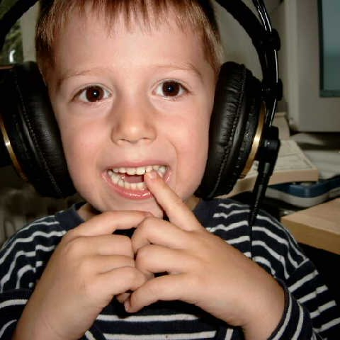
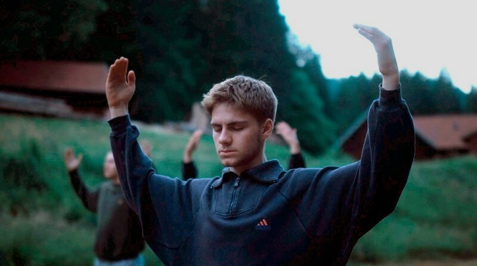
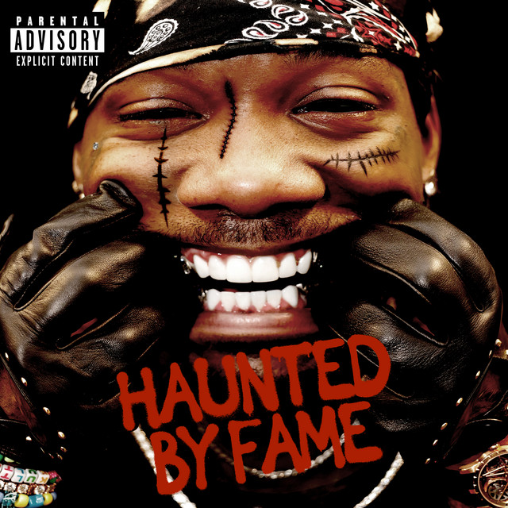
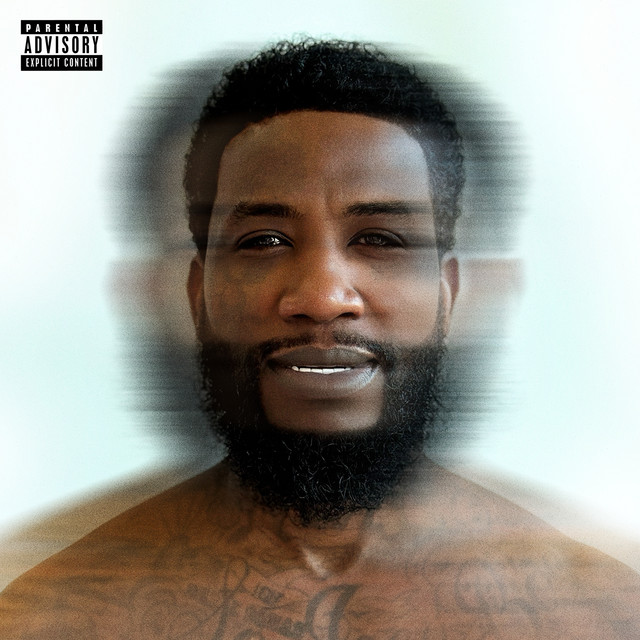
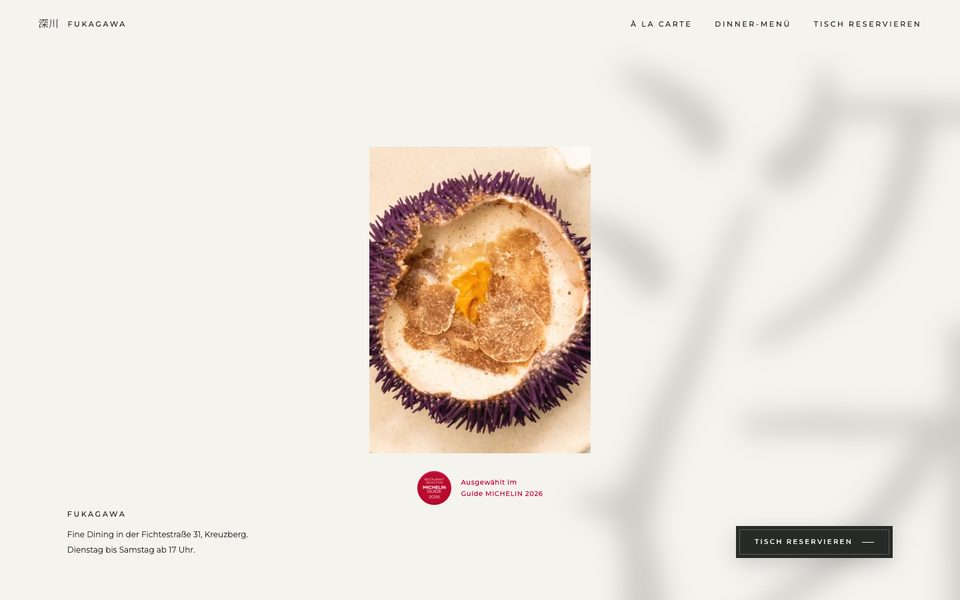
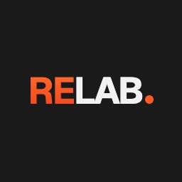

hey, i'm razz.

for as long as i can remember.

I edit films and produce music for a living. In between, I build brands and vibecode.
what i currently do
film: full-time film editing student @ fabw, one of the world's leading film schools.
music: co-founder @ straightupglobal, multi-platinum producer / sample maker.
editing: founder @ rippleedit, working with the biggest creators in music production.
vibecoding: Websites, internal tools, client tools and personal experiments.
check out some of my work
one of the films i edited: 
songs my team and i produced:   ONLY TIME (Gucci Mane),
ONLY TIME (Gucci Mane),
creators i edit for: ProducerGrind, MACSHOOTER and Ayo Sim.
websites i vibecoded: rippleedit, 
tools i vibecoded: ripplereview, 
I like meeting people who are curious, passion-driven, and just as obsessed with the things they care about. Let's connect.
Instagram @made.by.razz
Email madebyrazz@gmail.com